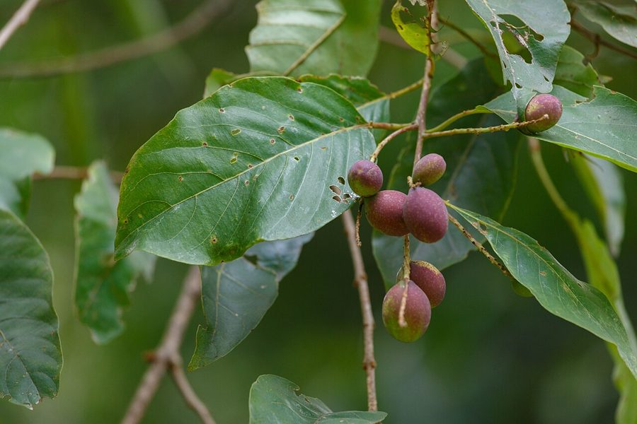

हरड़Haritaki
Terminalia chebula · Combretaceae · FLR-0087

- Scientific name
- Terminalia chebula Retz.
- Family
- Combretaceae
- Hindi
- हरड़
- Status here
- native
- IUCN
- LC
When to look कब देखें
Present all year.
हरड़ / Haritaki
Terminalia chebula Retz. — Combretaceae
हरड़ (हर्रे / हरड़ का पेड़ / चेबुलिक मायरोबालन) — पूर्वी उत्तर प्रदेश के शुष्क पर्णपाती जंगलों (dry deciduous forests), गांव के बागों, और पथरीले रास्तों पर पाया जाने वाला एक मध्यम से बड़े आकार का, बहुवर्षीय इमारती और औषधीय पेड़ (deciduous tree) है। इसकी ऊंचाई लगभग 15 से 25 मीटर तक होती है। यद्यपि यह एक बड़ा पेड़ है, लेकिन इस एटलस में इसके अत्यंत महत्वपूर्ण चिकित्सकीय महत्व के कारण इसे flora/medicinal श्रेणी में रखा गया है। इसकी सबसे बड़ी पहचान इसके अंडाकार फल (drupes) हैं जो पकने पर पीले-हरे होते हैं और सूखने पर गहरे भूरे रंग के 5-धारियों वाले (5-angled ribbed fruits) हो जाते हैं। हरड़ आयुर्वेद और तिब्बती चिकित्सा (जहाँ इसे 'अरूरा' या औषधियों का राजा कहा जाता है) की सबसे पूजनीय औषधि है। यह आयुर्वेद के सबसे प्रसिद्ध रसायन योग 'त्रिफला' (Triphala) के तीन घटकों में से एक मुख्य घटक है। इसके सूखे फल के चूर्ण का उपयोग कब्ज, पेट के रोगों, और मसूड़ों की सूजन को ठीक करने के लिए किया जाता है।
Quick Identification त्वरित पहचान
| Feature | Description |
|---|---|
| Tree habit | Medium to large deciduous tree up to 15–25 meters high, with a rounded crown and dark brown, cracked bark |
| Leaves | Opposite or sub-opposite, simple, elliptic-ovate (8–18 cm), with a pair of small warty glands on the leaf stem |
| Flowers | Small (3–4 mm), greenish-white or pale yellow, arranged in dense spikes at branch tips, smelling of honey |
| Fruit | Oval, ribbed drupe (2–4.5 cm), turning yellow-orange when fresh and drying into a hard, 5-ribbed brown nut |
| Bark | Dark greyish-brown, thick, developing deep vertical fissures and cracks as the tree ages |
Field tip: Look in old village forest fringes or reserve plantations. Search for trees with rough, vertically cracked grey-brown bark. Look on the ground during winter for hard, dry, wrinkled, egg-sized brown fruits with 5 clear ridges. The leaf stems have two small glands near the blade base.
Morphology आकारिकी
Biometrics (typical measurements of mature trees in the northern Indian plains):
| Measurement | Range |
|---|---|
| Tree height | 15–25 m |
| Trunk diameter (DBH) | 40–80 cm |
| Leaf length | 8.0–18.0 cm |
| Flower spike length | 5.0–10.0 cm |
| Fruit length | 2.0–4.5 cm |
| Seed size | 1.5–2.5 cm |
Trunk and Bark: The trunk is straight, with a thick, dark brown bark that peels in irregular woody plates. The wood is very hard, durable, and dark purple-brown.
Foliage: Simple, opposite or alternate leaves, pointed or blunt at the apex, entire margins. The upper leaf surface is smooth, while the lower surface is hairy when young.
Flowers: Small, sessile, bisexual, lacking petals, clustered in terminal panicles.
Fruit and Seeds: An obovoid or ellipsoid drupe, containing a single large, hard, woody, ribbed stone (seed) that is difficult to crack.
Associated Species / Interactions संबंधित प्रजातियाँ
- Forest Canopy Ecology: Provides nesting branches for larger woodland birds and shade for shade-loving medicinal herbs like Kalmegh growing beneath its canopy.
- Pollinators: Honeybees visit the spikes in spring to collect pollen and nectar.
- Triphala formulation: Combined with Amla (Phyllanthus emblica) and Baheda (Terminalia bellirica) in classical medicine to form Triphala, the premier bowel regulator.
Pests and Diseases कीट और रोग
- Leaf Gall Thrips: Trioza fletcheri causes the leaves to develop ugly, swollen, pouch-like red galls on the upper surface.
- Bark Borer Beetle: Larvae bore under the bark of older trees, creating structural decay.
- Heart Rot Fungus: Fomes species attack the core wood of mature trees, causing wood rot.
Traditional Preparations पारंपरिक औषधीय निर्माण
- Chronic Constipation and Indigestion → Dried Fruit → Remove the seeds from dry fruits, grind the outer pulp into a fine powder, and mix 3 g of powder with warm water → Consume at bedtime.
- Sore Throat and Mouth Ulcers → Fruit → Boil the dry fruit in water to prepare an astringent decoction, or chew a small piece of dry fruit pulp slowly → Gargle with the warm decoction twice daily, or swallow the juices.
- Weak Digestion and Low Appetite (Triphala) → Fruit → Mix equal parts of Haritaki powder, Amla powder, and Baheda powder to prepare Triphala powder → Consume 3-5 g of Triphala with warm water or honey before sleep.
- Bleeding Gums and Toothache → Fruit → Grind the dry fruit pulp into a very fine powder → Rub gently over the gums and teeth as a natural tooth powder once daily.
- Skin Wounds and Chronic Ulcers → Fruit → Boil the fruit pulp in water to make a strong decoction, or grind with water into a smooth paste → Wash the wounds with the decoction, or apply the paste topically.
Expected Locally स्थानीय रूप से अपेक्षित
Not a field record. Written from published accounts for eastern Uttar Pradesh. No confirmed local sighting yet — if you have seen it, that is what the atlas needs.
अभी तक स्थानीय पुष्टि नहीं। यह विवरण प्रकाशित स्रोतों से है, किसी अवलोकन से नहीं।
A respected native tree planted near village borders and in old temples throughout the Basti district, regularly observed in the Harraiya and Vikramjot blocks. Local elders state that harad trees are highly valued; the fallen fruits are collected in December and stored as a household emergency remedy for digestive complaints. Planting these trees is considered a sign of a well-established village settlement.
Distribution वितरण
Global range: Native to South Asia (India, Nepal, Bangladesh, Sri Lanka) and parts of Indochina.
In India: Widespread in deciduous forests of the lower Himalayas, central India, and dry plains of all states.
In Uttar Pradesh: Distributed in all moist and dry deciduous forest zones.
In Basti district / eastern UP: Found in old groves and forest plantations.
Research Questions शोध प्रश्न
Anyone can investigate these | कोई भी इन प्रश्नों की जाँच कर सकता है
- How many grams of dry Haritaki fruit pulp is obtained from a single mature tree in your block? — Record seasonal harvests.
- Does the chewing of dry Haritaki pulp reduce mouth ulcer pain faster than using commercial antiseptic gels? — Track healing durations.
- What is the germination rate of Haritaki seeds when the hard woody shell is cracked open versus left intact? — Conduct seed trials.
- How many insect species form galls on the leaves of a single Haritaki tree during the monsoon? — Count and compare leaf galls.
- Does the population count of leaf gall thrips on Haritaki trees decrease in trees grown in windy open fields compared to valleys in Basti? / क्या बस्ती के खुले मैदानी इलाकों में लगे हरड़ के पेड़ों में घाटी वाले पेड़ों की तुलना में लीफ गॉल थ्रिप्स (Gall Thrips) का प्रकोप कम होता है? — Compare leaf damage in different sites.
Similar Species मिलती-जुलती प्रजातियाँ
| Species | How to tell apart | comparison |
|---|---|---|
| Baheda (Terminalia bellirica) | Fruit is round, covered in velvety grey hair, lacks clear ridges; leaves are clustered at branch ends | बहेड़ा — गोल मखमली फल, शाखाओं के सिरे पर पत्ते |
| Arjun (Terminalia arjuna) | Bark is smooth, pinkish-grey; fruit is larger with 5 hard woody wings (not ridges); grows near water | अर्जुन — चिकनी सफेद-गुलाबी छाल, पंखदार फल |
| Amla (Phyllanthus emblica) | Leaves are tiny, pinnate-like; fruit is a round, smooth, translucent green berry with 6 lines | आँवला — बारीक पत्तियाँ, गोल पारदर्शी खट्टा फल |
Field rule: Medium deciduous tree with rough grey-brown fissured bark, leaf stems with two small glands, and oval ribbed fruits that dry into hard, 5-ribbed brown nuts, is the Haritaki.
Taxonomy & Classification वर्गीकरण
Original description. Anders Jahan Retzius described the Haritaki as Terminalia chebula in 1789 in his Observationes Botanicae (Part 5, p. 31). The type locality was listed as India. The genus name Terminalia is derived from the Latin terminus (end), referencing the leaves being clustered at the ends of the branches in many species. The specific name chebula comes from the Persian kabul, referencing early trade via Kabul.
Subspecies. Monotypic — no subspecies are currently recognised.
Family and order placement. Placed in the order Myrtales, family Combretaceae (combretum family), subfamily Combretoideae.
Phylogenetic notes. Terminalia chebula is a member of the diverse tropical genus Terminalia, characterized by woody drupes adapted for animal and water dispersal, and high concentrations of hydrolyzable tannins (chebulinic acid) developed as chemical defenses.
IUCN status rationale. Assessed as Least Concern (LC) by the IUCN Red List (assessed by the IUCN SSC Global Tree Specialist Group). It has a massive range and faces no major immediate extinction threats, although wild habitats are shrinking.
Photo Gallery फोटो गैलरी
References संदर्भ
- Retzius, A. J. (1789). Observationes Botanicae. Lipsiae, Part 5, p. 31. [original description]
- Brandis, D. (1906). Indian Trees. Archibald Constable & Co., London.
- Kirtikar, K. R. & Basu, B. D. (1935). Indian Medicinal Plants. Vol. II. Lalit Mohan Basu, Allahabad.
- Troup, R. S. (1921). The Silviculture of Indian Trees. Oxford University Press.
- World Flora Online (2024). Terminalia chebula taxon details.
- GBIF Occurrence Data — Terminalia chebula, India (2010–2025).
Source file: species/flora/medicinal/haritaki.md